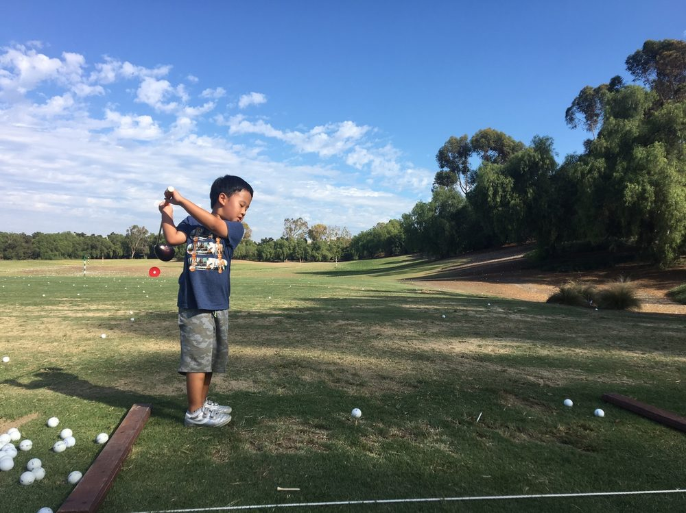
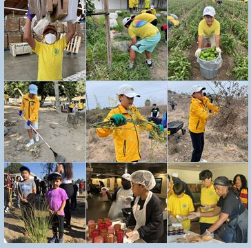
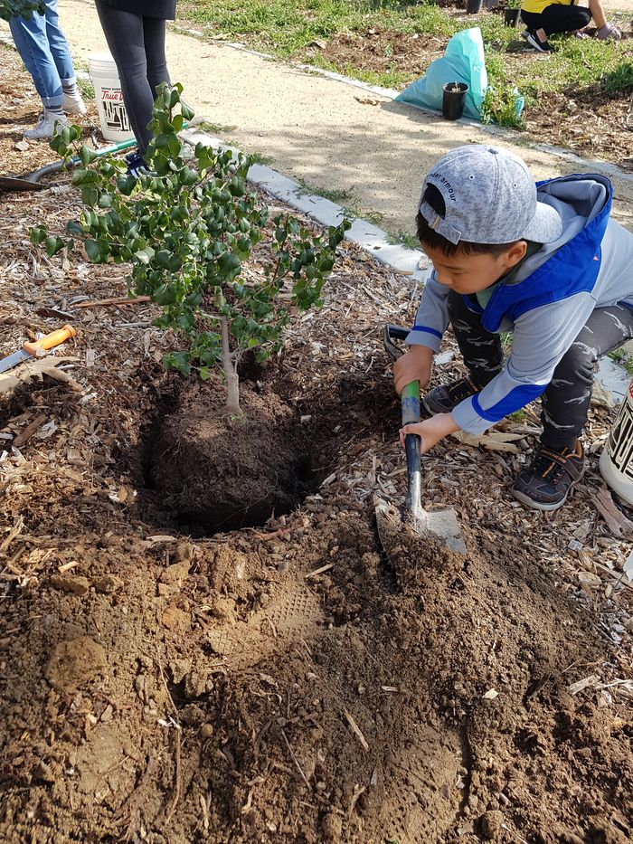

Why we started
골프가
가르쳐준 것
저는 초등학교에 들어가기 전인 2019년부터 지금까지 봉사를 해오고 있어요.
홈리스 분들을 위해 아침을 만들고, 나무를 심고, 해변을 청소하고, 알츠하이머를 앓는 어르신들 곁을 지켰어요.
대통령 봉사상도 여러 번 받을 만큼 오래 이어온 일이었지만, 사실 그땐 부모님이 하자고 하셔서 따라간 거였어요.
그런데 이상하게도, 제가 가장 오래 해온 골프만큼은 한 번도 그렇지 않았어요.
성적, 순위 — 여느 또래들처럼 저도 그랬어요. 결국 다 저 한 사람을 향한 숫자였고, 누군가를 위해 친 적은 없었죠.
고등학생이 되면서, 처음으로 그게 마음에 걸렸어요.
남을 돕는 법은 이미 오래전부터 배워왔는데, 정작 제가 제일 잘하는 일에는 그 마음을 한 번도 담아본 적이 없더라고요.
그래서 이번엔 누가 시켜서가 아니라, 제가 스스로 방법을 찾아보기로 했어요.
버디를 할 때마다 제 용돈에서 정해진 금액을 기부하는 것, 그게 제가 찾은 답이었어요.
동생 지석이에게도 같이 하자고 했어요.
늘 같이 봉사해온 동생이라, 이번에도 망설임 없이 함께해줬고요.
형은 그린 위에서, 동생은 그 옆에서 — 서로 다른 자리에서 하나의 마음을 만들어가는 프로젝트, 그게 JJ Birdies예요.
"그동안 부모님 도움으로 세상을 도왔다면, 이제는 제 스스로 도와보고 싶어요."
— Jiwan

골프를 처음 시작했을 때

초등학교 입학 전부터 이어온 봉사의 기록들
연도별 기록

2018